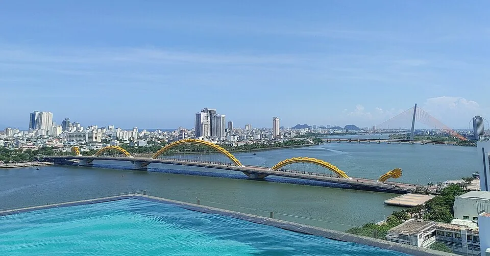

把“含水电”写成能结算的规则
曼谷Sitara Place的Serviced月住套餐含水和网络，电每月含300单位，超过后按政府费率收。这里给的是用量额度，公开价表没有列超额电的具体单价。额度跟着所选套餐，不能因为同住人数增加就自行多算一份。
胡志明市Saigon City Residence含的则是每月600,000越南盾电费额度，超额另付。它是金额，不能直接换成“多少度电”。还需要知道本次账单采用的单价和计费方式。月租同时含水、管理费和首罐燃气，第二罐起的燃气及税另付。房东说“含”，记录时仍要写清是哪一项、哪一期、含到哪里。
另付的项目，要保留用量和计费人数
岘港AVE Apartment写明电费按表，4,000越南盾/kWh；水费与管理费各100,000越南盾/人·月。电看电表，另外两项看人数和账期。一个人承担整套房，不等于每项都按整套固定收；与别人同住分摊，也不能把原本人头收费当成一份。
吉隆坡NOVO的月住条款写水电另付，但没有在这份价表给出单价。记账时就保留“待结算”，等本次合同和账单说明，而不是借用AVE或另一座城市的电价。NOVO还列入住押金2,000令吉，它也不是水电消费已经发生的证明。


只算一张AVE假设账单
假设一个人住AVE一个完整计费月，账单用电量为500kWh，水费和管理费都按一人收。按已列单价，电费是500×4,000＝2,000,000越南盾；再加水费100,000、管理费100,000，三项合计2,200,000越南盾。其中只有2,000,000是电费，管理费应另列。
这是一组明确假设的用量与人数，未包含房租、押金和未明确的税费，不是商家含税报价，也不是远程工作一个月会耗500度电的预测。实际账单若另列税费，按账单另记，保留收费名称和凭据。付款前用账期、用量、人数逐项对应，不把上面的合计当作结清凭证。
从入住读数，一直记到最后一张账单
入住时，在自己的账本里写下房间、人数和计费起止日，保存电表读数与日期照片。合同上的单价、用量额度或金额额度放在同一条记录旁，离店再留一次读数。账单到了，能对应到自己住的这段，而不是只剩一个转账金额。
住30晚也可能跨过商家的账期。额度是否按入住月、自然月或其他周期重置，尾段怎样收，先按自己的合同记清。每次结算保留房租、水电和管理等实际列项，再记付款日及已付金额。账单还没出，就标“待结算”，不拿预留数字补成已经消费。水费若确实已含房租，可以注明“已包含”，不重复加一笔。
押金影响入住资金，预留仍是计划
房租、押金和实际附费分开记。AVE押金相当于一个月房租，NOVO列2,000令吉；预付时先记录这笔占用的资金，退还和扣款按协议及结算单处理。若最终从押金中扣水电，就把扣除额转记为对应支出，另记退回余额，不再把同一笔水电当作新的付款加一次。
站内预算工具的生活费是出发前预留，正式账目另用自己的表格或记账软件记录。对账时看每一笔实际费用是否已经包含在房租里，再按本期真实账单汇总。预留与实际有差额很正常。差额要从用量、人数和账期找原因，不能据这四家不同收费规则判断哪座城市一定更便宜。
来源与阅读范围
作者：Roamorrow 编辑部。本文链接不收取返佣。费用按文中条件演算，具体日期的账单与使用条件另确认。
查看价格与规则出处
- AVE Apartment：月租与水电 · 资料核对 2026-10-26
沿用岘港城市指南DN-AVE的2026-10-26核价记录：一月起租、按表电价、水与管理人头费、押金及已含清洁/网络。本专题只引用收费单位与记账所需条款。 电4000VND/kWh；水及管理各100000VND/人/月；押金一月房租。没有完整税费或所选日期订单，不按含税总价使用。
- Rates — Sitara Place Hotel & Serviced Apartments · 资料核对 2026-10-27
沿用曼谷研究原核读范围：Rates及Serviced Monthly套餐差异、月期说明，约原文28—84行；未核尾部全部条款。本专题只用每月300单位电及超额按政府费率。 含水与网络；300为套餐电量额度，已读表未列超额具体单价。VAT、交易费等不据此补零。
- Monthly Rental Policy · 资料核对 2026-10-27
沿用胡志明研究HCM-SCR-POLICY-20261027：月租包含与不含项目；本专题只用金额额度、水/管理及燃气/税边界。 月含600000VND电费额度；超额电、第二罐起燃气与税另付。原页没给超额电单价和税率，不与AVE单价拼成计算。
- NOVO：月租、房型与押金 · 资料核对 2026-10-26
沿用吉隆坡指南KL-NOVO的2026-10-26核读：月住房型起价、水电另付、2000MYR押金；本专题不使用房租起价进行总费测算。 水电另付，但原页未列本次水电单价/抄表分摊及完整含税订单。押金单列，不当消费。